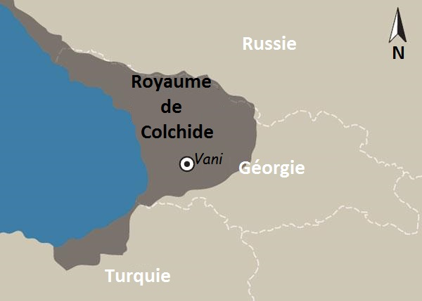

Bienvenue dans le royaume de Colchide
Dans l'ancienne géographie, la Colchide, Colchis ou Kolchis est un ancien État, royaume puis région géorgienne, qui a joué un rôle important dans la formation de la culture ethnique du peuple géorgien et de ses sous-groupes. Le royaume de Colchide a contribué au développement de l'État géorgien médiéval, à la suite de son unification avec le royaume d'Ibérie, ou Karthli. Le terme « Colchide » est utilisé pour désigner l'ensemble des anciennes tribus qui vivaient sur la côte orientale de la mer Noire jusqu'à Giresun (anciennement "Cerasus"). Sa puissance et ses structures étatiques, déjà vers le IIe millénaire av. J.C, jouent un rôle actif en Asie Mineure. Selon la mythologie grecque, la Colchide est le royaume d'Éétès et de Médée et la destination des Argonautes, ou encore le pays des Amazones. La région correspond actuellement à plusieurs provinces géorgiennes, dont la Svanétie, le Ratcha et l'Abkhazie, l'Iméréthie, le Gourie, l'Adjarie plus le nord-est de la Turquie actuelle (provinces de Trabzon et d'Artvin). Les Colches, probablement l'une des plus anciennes tribus de Géorgie, étaient établis dans la région depuis l'âge du bronze.